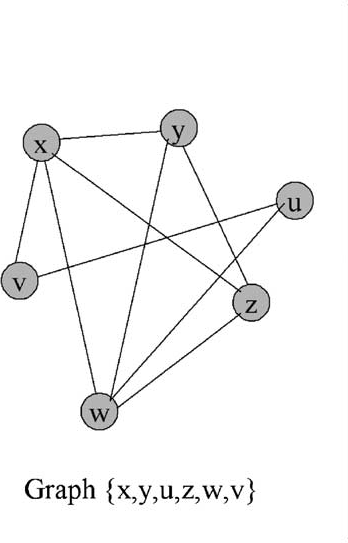
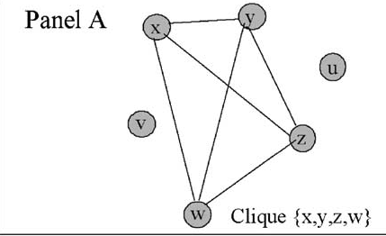

Design and Analysis of Algorithms: A Deep Dive into Vertex Cover, 3SAT, and Max Clique
Here we will expolore the above topics
Vertex Cover: Exploring the Core of Graph Theory and Algorithm Design
Introduction
Graph theory is a branch of mathematics that explores the relationships and connections between entities represented as vertices and edges in a graph. One fundamental concept within graph theory is the notion of a vertex cover, which plays a crucial role in various applications, ranging from network design to optimization problems. In this blog, we delve into the definition, significance, and computational challenges associated with vertex covering, with a particular focus on the minimum vertex cover problem.
Definition of Vertex Cover
A vertex cover in a graph is a subset of vertices such that every edge in the graph is incident to at least one vertex in the cover. More formally, given an undirected graph G = (V, E) , a vertex cover is a subset of vertices such that for every edge (u, v) in E , at least one of u or v is in C. This implies that the vertices in the vertex cover "cover" all the edges in the graph.
Formally, a vertex cover can be represented as a set C = {v1, v2, ..., vk}, where k is the size of the vertex cover. The goal of vertex covering is often to find the smallest possible vertex cover for a given graph, known as the minimum vertex cover problem.

Vertex Cover Figure: BB Tutorials
In the above graph, set K1=(B,D) is the vertex covering of graph. Another vertex cover for the graph would be K2= (A,B,C)
Minimal vs Minimum Vertex covering
Minimal Vertex Cover: A minimal vertex cover in a graph is a vertex cover in which none of the vertices can be removed without compromising the cover property.
In the above example, we can say that from set K1=(B,D) and K2=(A,B,C), none of the vertices can be removed, so they are minimal vertex covering. But from set K3= (A,B,C,D) A and C can be removed or only D can be removed, and it will still remain a vertex cover, so it is not a minimal vertex cover
Minimum Vertex Cover: A minimum vertex cover in a graph is a vertex cover with the smallest possible number of vertices.
In the above example,it is clear set K1=(B,D) has least number of vertices,i.e2
Significance of Vertex Covers
Vertex covers have a broad range of applications across different domains, making them a key concept in graph theory and computer science. Some notable applications include:
- Network Design: In network design, where nodes represent devices and edges represent connections, finding a minimal vertex cover helps optimize resource allocation and connectivity while minimizing costs.
- Optimization Problems: Many optimization problems can be modeled as graph problems, and vertex covers provide a way to address these problems efficiently. For example, in scheduling problems, a vertex cover may represent a minimal set of tasks that cover all dependencies.
- Computer Science Algorithms: Vertex covers are used in algorithm design, particularly in the analysis of approximation algorithms and computational complexity. The minimum vertex cover problem is known to be NP-hard, making it a valuable benchmark for algorithmic research.
Computational Complexity of Vertex Cover
The minimum vertex cover problem is classified as NP-hard, indicating that finding the optimal solution is computationally challenging and may require exponential time in the worst case. This complexity arises from the need to explore all possible subsets of vertices to determine the smallest cover that satisfies the conditions.
Algorithm to Find Vertex Cover of a Graph
1) Initialize the result as {}
2) Consider a set of all edges in given graph. Let the set be E.
3) Do following while E is not empty
a) Pick an arbitrary edge (u, v) from set E and add 'u' and 'v' to result
b) Remove all edges from E which are either incident on u or v.
4) Return result
GeeksForGeeks.com- Algorithm and Implementation
Conclusion
In conclusion, vertex covering is a fundamental concept in graph theory with wide-ranging applications in network design, optimization, and algorithm design. The minimum vertex cover problem, being NP-hard, poses significant computational challenges, inspiring the development of approximation algorithms and heuristic methods. As technology advances, the study of vertex covers continues to contribute to the development of efficient algorithms with practical applications in diverse fields. The exploration of these concepts not only enhances our understanding of graph theory but also provides valuable tools for addressing real-world problems.
Max Clique
Understanding Cliques
A clique in an undirected graph is a set of vertices where every pair of distinct vertices is connected by an edge. To illustrate, consider a graph where vertices x, y, z, and w form a clique as each vertex is directly connected to every other vertex in the subset.
 Max Clique Figure: Research gate
In this depiction, the set (x, y, z, w) forms a clique, representing a fundamental concept in graph theory.
Maximal Cliques:
Maximal cliques introduce a new layer to the concept of cliques. A maximal clique is a clique that cannot be expanded by adding an adjacent vertex. In simpler terms, if you were to include any more vertices in the subset, it would cease to be a clique.
Let's consider the same graph again, where vertices x, y, and z form a clique. While this is a clique, it is not a maximal clique because it can be extended by adding the adjacent vertex w. Once w is introduced, the subset is no longer a maximal clique.
Algorithm to Find Maximal Clique
Procedure:
1.Initialize an empty list.
2.Call the function to find the largest clique.
Function to Find Largest Clique:
If the current set of vertices forms a clique:
A. For each vertex in the graph:
If the vertex is not in the current set:
(i) Add the vertex to the set.
(ii) Recursively call the function.
(iii) Remove the last vertex (backtrack).
B. Return if no more vertices can be added to the set.
Function to Check if Clique:
Check if the current set of vertices forms a clique in the graph.
Return true if it is a clique, false if not a clique.
Max Clique Algorithm: GeeksforGeeks
Maximum Cliques:
Contrastingly, maximum cliques are all about size. A maximum clique is the largest clique within a graph, boasting the maximum number of vertices among all cliques. The size of a clique is simply the count of vertices it contains.
Consider a scenario where multiple cliques exist within a graph. Maximum clique involves identifying the clique with the greatest number of vertices.
In the above example set of x,y,z and w can be called as Maximum Clique as it has the most number of vertices, i.e 6
The Challenge of Maximum Clique
The complexity of the maximum clique problem has implications for various real-world applications, including social network analysis, bioinformatics, and optimization in computer science.
Algorithm
1. Initialize:
Start with an empty set as your current candidate for the maximum clique.
Initialize a set of nodes that haven't been considered yet.
2. Select Node:
Pick any node from the set of unconsidered nodes.
3. Check Connectivity:
Add the selected node to your candidate set if it's connected to all nodes already in the candidate set.
4. Update Candidate Set:
Remove the selected node from the set of unconsidered nodes.
5. Repeat:
Repeat steps 2-4 until there are no more unconsidered nodes.
6. Output:
The current candidate set is your maximum clique.
Max Clique Algorithm: Tutorials Point
3-SAT
Introduction to 3-SAT
In t computer science and mathematical logic, 3-SAT emerges as a distinctive type of Boolean satisfiability problem. Boolean satisfiability problems involve determining the feasibility of assigning truth values to variables within a logical formula. 3-SAT, in particular, adds a layer of complexity by structuring these formulas in conjunctive normal form (CNF), where each clause comprises precisely three literals connected by logical OR operators.
Anatomy of a 3-SAT Problem
To illustrate, a single clause in 3-SAT takes the form (A OR B OR C), and a complete 3-SAT problem consists of a collection of such clauses. The overarching objective is to ascertain whether a combination of true and false assignments to variables exists, rendering the entire formula true.
Computational Complexity and NP-Completeness
3-SAT stands as a well-studied problem in computational complexity theory. Its decision problem is classified as NP-complete, a category of problems notorious for their computational challenges. The term "NP-complete" indicates that while verifying a potential solution is relatively straightforward, finding a satisfying assignment is computationally hard.
Satisfiability
The variables A, B, and C must be strategically assigned truth values to meet the criteria of each clause. The challenge lies not only in determining whether a satisfying assignment exists but also in efficiently finding one within the vast solution space.
Algorithms and methodologies designed to tackle 3-SAT vary in complexity, reflecting the intricacies of navigating Boolean formulas in CNF with three literals per clause.
Algorithm to Find satisfying assignment for a 3-SAT problem
1. Initialize Assignment:
a. Start with an empty assignment of truth values to variables.
2. Check Satisfiability:
a. For each clause in the 3-SAT formula:
i. If at least one literal in the clause is satisfied by the current
assignment, move on to the next clause.
ii. If no literal in the clause is satisfied, backtrack to the previous
variable assignment.
3. Explore Assignments:
a. For the current variable in the assignment:
i. Try assigning it the value 'true'.
ii. Recursively check satisfiability with the updated assignment.
iii. If the formula is satisfiable, return true.
iv. If not, backtrack to the previous assignment and try assigning
the variable 'false'.
4. Base Case:
a. If all variables have been assigned a truth value, check if the entire
3-SAT formula is satisfied.
b. If satisfied, return true.
c. If not, backtrack to the previous assignment.
5. Termination:
a. Stop when a satisfiable assignment is found or all possible assignments
have been explored.